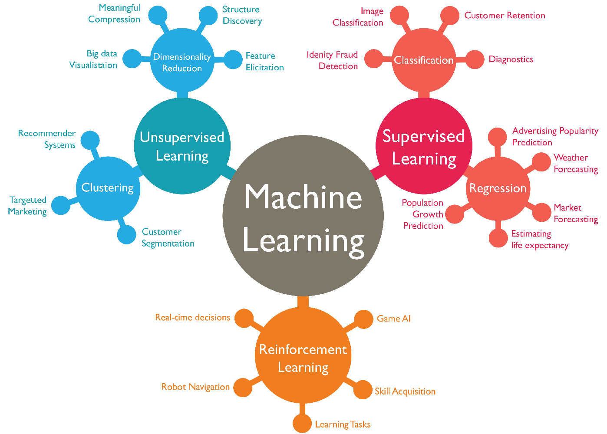

Welcome to the world of Technical Session and Workshop.
Workshop
Machine Learning

- Machine Learning is a sub domain of Artifical Intelligence which is responsible
for
decision making using
previous historical data with help of various algorithms.
- Machine learning mainly conisits of Supervised Learning and unsupervised learning. Supervised
learning
has data in a structured manner.
Artificial Intelligence
- Artificial intelligence is a domain in computer which is responsible for the decision making and
advancement of machine using human brain for initial training, after which they have intelligenve
asex
human to make their work without involvement of humans, which can perform repeated tasks simple.
- Artificial Intelligence conisits of sub domains like Machine Learning, Deep Learning.
Industrial Internet of Things
- Industial Internet of Things is a technology that allows you to automate the industry using various
sensors and devices work on the Internet to recieve and transfer signals for input and output
parameters
using which they form the necessary operation on the machine.
Events
Robo Race
- Robo Race is a place where two robo or more robos move in a pre defined track pssing through
obstacles and challenges places in between in minimum time
- One has to bring a Robot vehicle like car.
Quiz
- Welcome back to quiz time in this a team of 10 members will participate in the game.